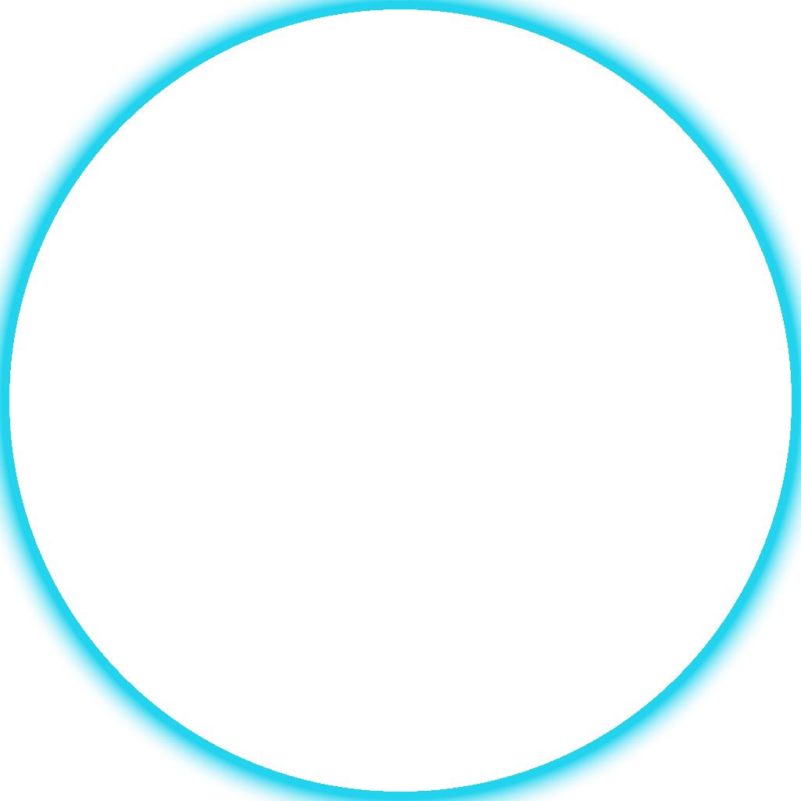
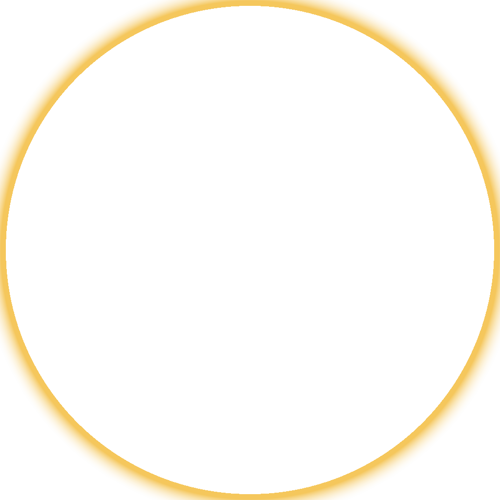
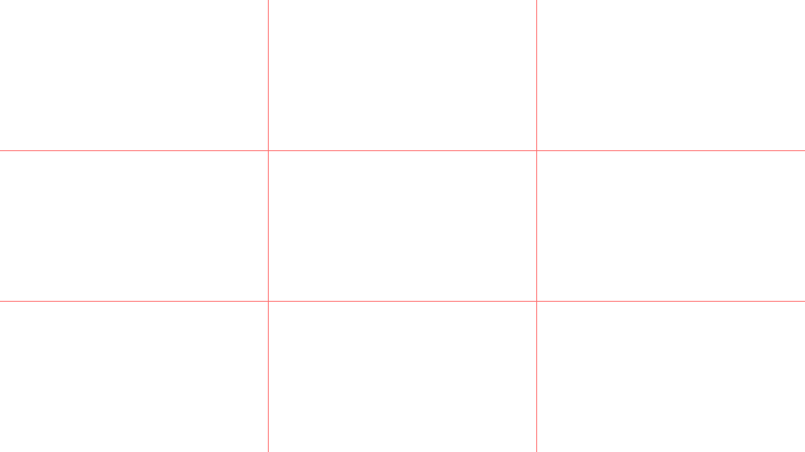

OBS / 剪映 拍摄素材
棋盘格 = 透明区域 · 生成命令
python3 tools/video/make_assets.py
人像圆形小窗（PiP）
circle_mask.png
圆形遮罩。剪映里叠在人像上用「圆形」蒙版即可；OBS 里给图像源加 Alpha 遮罩滤镜时用它。
1024×1024 · 27KB

ring_glow_cyan.png
青色发光圆环，叠在人像圆形之上做描边。科技感，软件演示集用。
1024×1024 · 83KB

ring_glow_gold.png
金色发光圆环，高端住宅调性。第 03/09 集楼下实景（鱼缸、LED 屏）用这个。
1024×1024 · 83KB
后期 / 构图
vignette_dark.png
暗角。OBS 里放最上层当滤镜，中心透明不影响内容，四边压暗出电影感。
1920×1080 · 155KB

grid_3x3.png
三分构图参考线。
拍摄时开，录完必须关
。人脸放上三分交点，别放正中间。
1920×1080 · 12KB
title_bar.png
半透明标题条（备用）。
实际剪辑建议在剪映里直接加文字
，这个 rarely 用得上。
1200×120 · 1KB